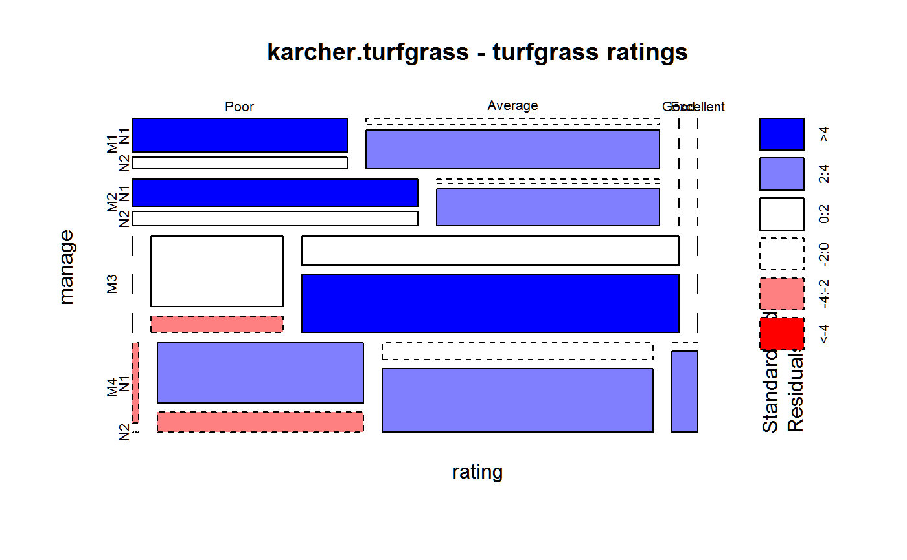

karcher.turfgrass.RdTurfgrass ratings for different treatments
A data frame with 128 observations on the following 6 variables.
weekweek number
repblocking factor
managemanagement factor, 4 levels
nitronitrogen factor, 2 levels
ratingturfgrass rating, 4 ordered levels
countnumber of samples for a given rating
Turf color was assessed on a scale of Poor, Average, Good, Excellent.
The data are the number of times that a combination of management style and nitrogen level received a particular rating across four replicates and four sampling weeks. The eight treatments were in a completely randomized design.
Nitrogen level 1 is 2.5 g/m^2, level 2 is 5 g/m^2.
Management 1 = N applied with no supplemental water injection.
M2 = surface applied with supplemental water injection.
M3 = nitrogen injected 7.6 cm deep
M4 = nitrogen injected 12.7 cm deep.
Schabenberger, Oliver and Francis J. Pierce. 2002. Contemporary Statistical Models for the Plant and Soil Sciences. CRC Press. Page 380.
library(agridat) data(karcher.turfgrass) dat <- karcher.turfgrass dat$rating <- ordered(dat$rating, levels=c('Poor','Average', 'Good','Excellent')) ftable(xtabs(~manage+nitro+rating, dat)) # Table 6.19 of Schabenberger#> rating Poor Average Good Excellent #> manage nitro #> M1 N1 14 2 0 0 #> N2 5 11 0 0 #> M2 N1 15 1 0 0 #> N2 8 8 0 0 #> M3 N1 0 9 7 0 #> N2 0 2 14 0 #> M4 N1 1 12 3 0 #> N2 0 4 11 1# Probably would choose management M3, nitro N2 mosaicplot(xtabs(count ~ manage + rating + nitro, dat), shade=TRUE, dir=c('h','v','h'), main="karcher.turfgrass - turfgrass ratings")# Multinomial logistic model. Probit Ordered Logistic Regression. libs(MASS) m1 <- polr(rating ~ nitro*manage + week, dat, weights=count, Hess=TRUE, method='logistic') summary(m1)#> Call: #> polr(formula = rating ~ nitro * manage + week, data = dat, weights = count, #> Hess = TRUE, method = "logistic") #> #> Coefficients: #> Value Std. Error t value #> nitroN2 3.1565 0.8255 3.8235 #> manageM2 -0.8728 1.0084 -0.8656 #> manageM3 8.2088 1.2938 6.3448 #> manageM4 6.8309 1.2595 5.4235 #> week -1.0952 0.1823 -6.0080 #> nitroN2:manageM2 0.2618 1.2318 0.2126 #> nitroN2:manageM3 -0.7183 0.9831 -0.7307 #> nitroN2:manageM4 0.5304 1.0120 0.5242 #> #> Intercepts: #> Value Std. Error t value #> Poor|Average -1.0751 0.7057 -1.5235 #> Average|Good 5.4853 1.2123 4.5247 #> Good|Excellent 11.6691 1.3628 8.5627 #> #> Residual Deviance: 247.6414 #> AIC: 269.6414# Try to match the "predicted marginal probability distribution" of # Schabenberger table 6.20. He doesn't define "marginal". # Are the interaction terms included before aggregation? # Are 'margins' calculated before/after back-transforming? # At what level is the covariate 'week' included? # Here is what Schabenberger presents: ## M1 M2 M3 M4 | N1 N2 ## Poor .668 .827 .001 .004 | .279 .020 ## Avg .330 .172 .297 .525 | .712 .826 ## Good .002 .001 .695 .008 | .008 .153 ## Exc .000 .000 .007 .003 | .001 .001 ## We use week=3.5, include interactions, then average newd <- expand.grid(manage=levels(dat$manage), nitro=levels(dat$nitro), week=3.5) newd <- cbind(newd, predict(m1, newdata=newd, type='probs')) # probs) print(aggregate( . ~ manage, data=newd, mean), digits=2)#> manage nitro week Poor Average Good Excellent #> 1 M1 1.5 3.5 0.6711 0.33 0.00109 2.3e-06 #> 2 M2 1.5 3.5 0.7636 0.24 0.00059 1.2e-06 #> 3 M3 1.5 3.5 0.0023 0.48 0.51504 4.2e-03 #> 4 M4 1.5 3.5 0.0086 0.57 0.41908 3.5e-03## manage nitro week Poor Average Good Excellent ## 1 M1 1.5 3.5 0.67 0.33 0.0011 0.0000023 ## 2 M2 1.5 3.5 0.76 0.24 0.00059 0.0000012 ## 3 M3 1.5 3.5 0.0023 0.48 0.52 0.0042 ## 4 M4 1.5 3.5 0.0086 0.57 0.42 0.0035